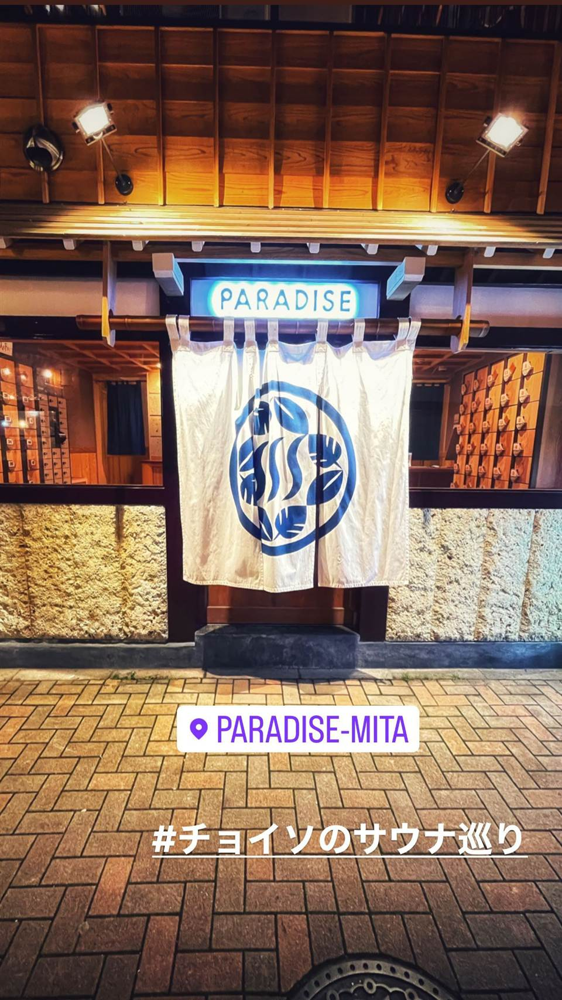

サウナ専門 · 本部町
亜熱帯サウナ（ANETTAI SAUNA）
「日本一野性的なサウナ」がコンセプト、亜熱帯のジャングルに囲まれた外気浴スペース
沖縄本島・本部町のジャングルの中にある完全予約制の貸切サウナ。「日本一野性的なサウナ」を掲げ、湧水の水風呂と亜熱帯の自然に包まれた外気浴が楽しめる。
TRIVIA
豆知識
- 「日本一野性的なサウナ」を掲げるジャングルの中の貸切サウナ
- 水風呂は近くの湧水を利用
| 種類 | サウナ専門（アウトドア・完全予約制の貸切サウナ） |
|---|---|
| 利用 | 男女とも |
| サウナ | ジャングルの中の一棟貸切サウナ |
| 水風呂 | 近隣の湧水を溜めた水風呂 |
| 料金 | 一般利用は平日2,200円・土日祝2,750円。一棟貸切（2時間・12名まで）は平日29,700円・土日祝35,200円 |
| 営業時間 | 11:00〜20:30、定休日は木曜・悪天候時（完全予約制） |
| 場所 | 沖縄県国頭郡本部町伊豆味 |
OFFICIAL
館内の様子
NEARBY
近い施設・同じ種類
-
 サウナ専門 池袋駅
サウナ&ホテル かるまる池袋
男性専用
男性専用のサウナ特化ホテル。4種のサウナと個性の異なる複数の水風呂を備え、そのまま宿泊も可能
サウナ 93℃
3
サウナ専門 池袋駅
サウナ&ホテル かるまる池袋
男性専用
男性専用のサウナ特化ホテル。4種のサウナと個性の異なる複数の水風呂を備え、そのまま宿泊も可能
サウナ 93℃
3
-

サウナ専門 田町駅・三田駅 PARADISE（パラダイス） 男性専用 築90年の銭湯「万才湯」をリノベーションした施設。極楽浄土をイメージした空間デザイン。男性専用施設（レディースデーは不定期）、完全キャッシュレス決済 水風呂 16℃ 一般入浴（平日）最初の30分1 -
 サウナ専門 赤坂駅（徒歩1分）、赤坂見附駅（徒歩5分）、溜池山王駅（徒歩7分）
Sauna-Tokyo（サウナ東京）赤坂
男性専用
複数のテーマの異なるサウナ室と3種の水風呂を備えた大型サウナ施設。60人以上座れる休憩スペースあり
水風呂 15℃
平日1時間1
サウナ専門 赤坂駅（徒歩1分）、赤坂見附駅（徒歩5分）、溜池山王駅（徒歩7分）
Sauna-Tokyo（サウナ東京）赤坂
男性専用
複数のテーマの異なるサウナ室と3種の水風呂を備えた大型サウナ施設。60人以上座れる休憩スペースあり
水風呂 15℃
平日1時間1
-
 サウナ専門 JR渋谷駅新南改札（徒歩3分）
渋谷SAUNAS（サウナス）
都心では珍しい外気浴スペースを完備した日本最大級級の都市型サウナ施設。ワークスペースや会議室も併設、予約不要
平日3
サウナ専門 JR渋谷駅新南改札（徒歩3分）
渋谷SAUNAS（サウナス）
都心では珍しい外気浴スペースを完備した日本最大級級の都市型サウナ施設。ワークスペースや会議室も併設、予約不要
平日3
-
 サウナ専門 JR新橋駅 烏森口（徒歩3分）
ライオンサウナ新橋（レンブラントキャビン＆スパ新橋）
男性専用
男性専用。2023年3月オープン。サウナ2種・水風呂2種に加え、あつ湯 約44℃と白湯 約40℃の内湯。キャビン式で泊まれる
サウナ 110℃ 水風呂 10℃
フリーコース 2
サウナ専門 JR新橋駅 烏森口（徒歩3分）
ライオンサウナ新橋（レンブラントキャビン＆スパ新橋）
男性専用
男性専用。2023年3月オープン。サウナ2種・水風呂2種に加え、あつ湯 約44℃と白湯 約40℃の内湯。キャビン式で泊まれる
サウナ 110℃ 水風呂 10℃
フリーコース 2
-
 サウナ専門 JR新橋駅前（徒歩1分）
オアシスサウナ アスティル
男性専用
男性専用、タオル・館内着込み、ミルキーバス、フットバス、低温スチームサウナ、有料テルマベッド、宿泊利用も可能
サウナ 85℃ 水風呂 13℃
通常3
サウナ専門 JR新橋駅前（徒歩1分）
オアシスサウナ アスティル
男性専用
男性専用、タオル・館内着込み、ミルキーバス、フットバス、低温スチームサウナ、有料テルマベッド、宿泊利用も可能
サウナ 85℃ 水風呂 13℃
通常3